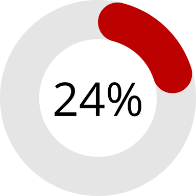
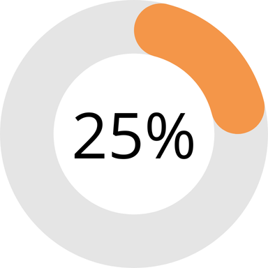

Seu uso de energia
Uso de energia durante o mês:
A quantidade de uso de energia ultilizada no"mês" é de : 750kWh
*Isso equivale por dia aproximadamente ≈ 25kWh/dia
Quantidade de recursos ultilizados:
A quantidade de recursos ultilizados para a produzir essa quantidade de energia é: ≈ 1.875L *água ultilizada para geração de energida (1kWh = 2,5L) em uma Usinas Termelétricas
Previsão de custo:
Considerando a tarifa média de R$ 0,66 por kWh sua conta será de: R$492,00
Grafico de consumo
Seu gasto na sua conta de energia foi de 24% a mais referente ao mês passado
Seu gasto de kWh foi de 25% a mais comparado ao mês anterior
Consumo no últmo mês:
Total de energia ultilizada no últmo mês: 600kWh Média de energia últilizada por dia no últmo mês: 20kWh/dia
Custo do último mês:
Considerando a tarifa média de R$ 0,66 por kWh sua conta foi de R$ 396,00